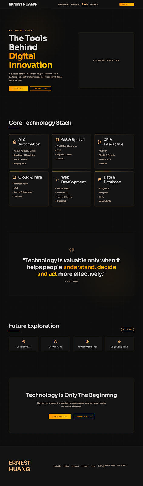

AI & Automation
OpenAI, Claude, Gemini, LangChain, Python, Jupyter, Hugging Face.
System / Digital Toolkit
A curated collection of technologies, platforms, and systems used to transform ideas into meaningful digital experiences.

OpenAI, Claude, Gemini, LangChain, Python, Jupyter, Hugging Face.
ArcGIS Pro, QGIS, Mapbox, Cesium, PostGIS.
Unity 3D, WebGL, Three.js, Unreal Engine, A-Frame.
React, Next.js, Tailwind CSS, Node.js, TypeScript.